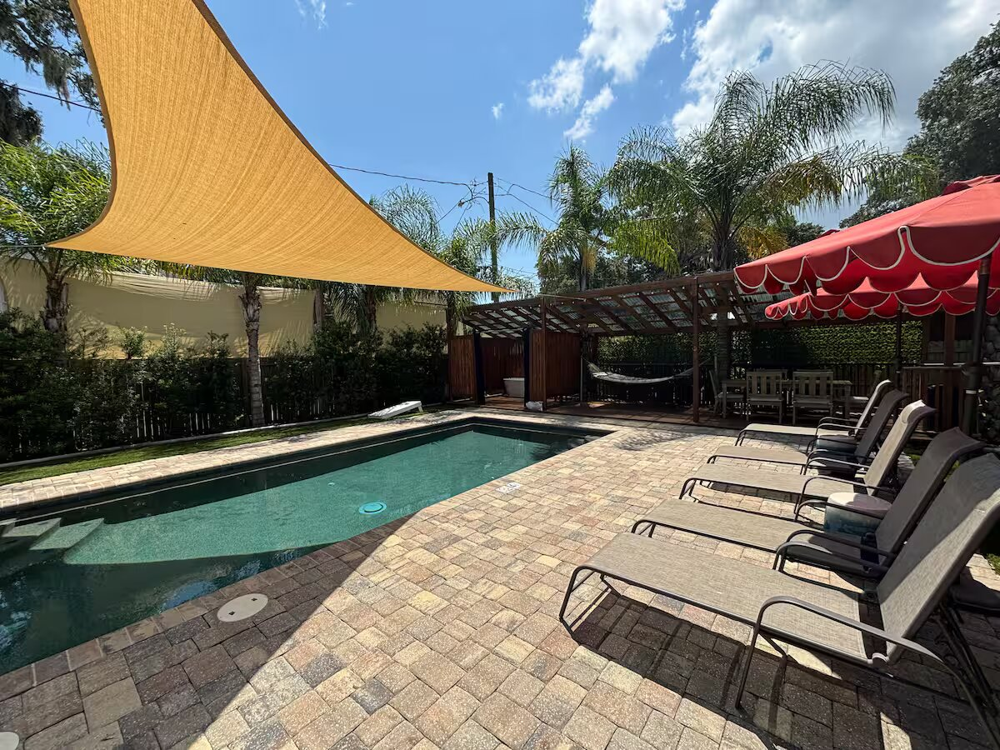

New Smyrna Beach is one of the closest authentic beach towns to Central Florida. Typical drive times from the Orlando area range from about 55 minutes to 1 hour 15 minutes via I-4 to SR-44, depending on traffic. From Lake Mary, Longwood, and Casselberry the trip is often in the 45–65 minute range under normal conditions.
That distance makes The Hideaway a practical weekend or mid-week escape. Guests leave the theme-park corridors for a private saltwater pool, walkable historic downtown, and a five-minute drive to the beach — without the density of many oceanfront properties.
A weekend escape from Orlando, Lake Mary, or Longwood does not need a flight. New Smyrna Beach sits roughly 45 to 75 minutes east, depending on where you start and how I-4 is moving. The Hideaway is the booking that makes that drive worth it: a private saltwater pool bungalow in historic downtown, adults only, ready for two or three nights or a longer reset.
Searches for a weekend getaway from Lake Mary, an Orlando to New Smyrna Beach Airbnb, or a Longwood beach weekend rental usually mean the same plan. Leave after work, arrive in time for the fire table, and spend Saturday between the pool and a five-minute drive to the beach. Sunday morning can be the Farmers Market at Old Fort Park before the drive home.
Casselberry and the rest of the northern Orlando corridor work the same way. You are not booking a party house. Guests must be 30 or older, the booker stays on the property, and pets, smoking, and events are not allowed. That filter keeps a downtown pool rental peaceful on a busy Florida weekend.
The property was remodeled in 2019 and is a dedicated vacation rental, so you are not sharing a lobby or a community pool. If you can stretch the trip to five nights, a $200 gift card to The Garlic at 556 E 3rd Avenue comes with the stay. The restaurant opens at 4:00 p.m. and is about five minutes from the house, which makes one dinner automatic.
Check Airbnb for Friday-to-Sunday dates first. Those are the nights Central Florida guests book when they want the Atlantic without giving up Monday morning. A private pool in historic downtown New Smyrna Beach is the simplest version of that weekend, and it is the one worth reserving before the date fills.
Reserve Now on AirbnbYes. Guests must be 30 or older to book. The person who books must stay on the property. No parties or events are allowed. These rules protect the quiet private-pool experience that guests consistently rate 5.0 stars.
No. The Hideaway is not pet friendly. Smoking is also prohibited anywhere on the property, inside and outside.
Daytona Beach International Airport (DAB) is the closest, roughly 18–20 miles and a 25–30 minute drive. Orlando Sanford International Airport (SFB) is about 33 miles (roughly 45–55 minutes). Orlando International Airport (MCO) is approximately 60–75 miles and typically 1 hour 10 minutes to 1 hour 30 minutes depending on traffic. All three serve international and domestic flights.
Most routes via I-4 East to SR-44 take 45–75 minutes under normal conditions. Lake Mary, Longwood, and Casselberry are often on the shorter end of that range. Peak traffic on I-4 can add 15–30 minutes.
February–April and October–November typically offer the best balance of weather, crowds, and rates. Summers are hotter with afternoon storms; fall and late winter are quieter with pleasant temperatures. Hurricane season runs June through November.
Yes, in designated areas (generally from the jetty south to 27th Avenue). Non-residents pay $30 per day for beach driving or $20 for off-beach parking lots. Hours vary by season (roughly 8 a.m. to 7 p.m. during turtle nesting season). No-drive sections exist for quieter walks.
Book five nights or more at The Hideaway and receive a complimentary $200 gift card to The Garlic (556 E 3rd Avenue). The restaurant is about five minutes from the property, open daily from 4:00 p.m., and known for rustic Italian cuisine and live music.
The Saturday Farmers Market at Old Fort Park (around 210 Sams Avenue, typically 7:00 a.m.–12:30 p.m.), shops, restaurants, RiverWalk Park, and the Intracoastal Waterway are all within walking distance. Flagler Avenue and the beach are a short five-minute drive.